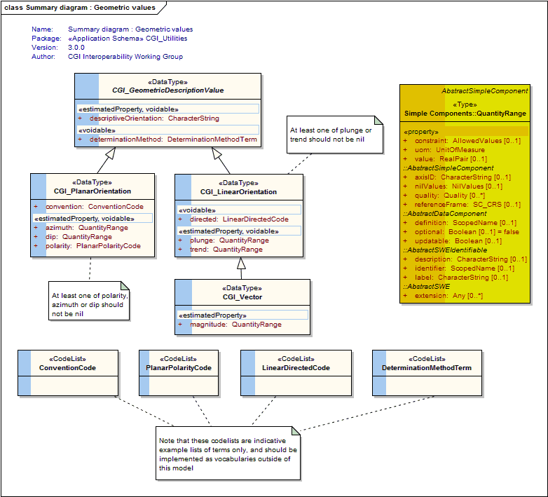
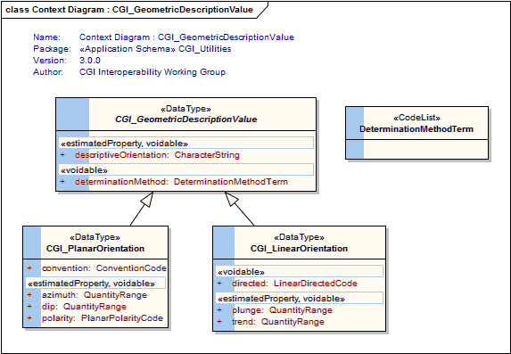
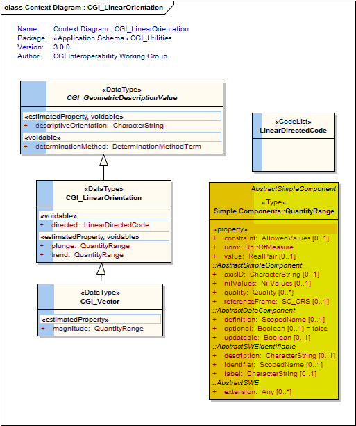
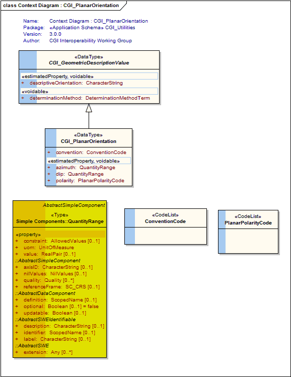
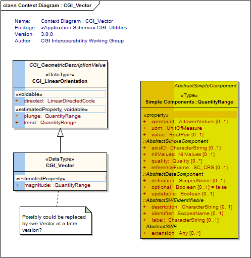

Package GeoSciML/CGI_Utilities
A package of utility elements, including definitions of text and numeric value types, and specialist value types for geological structural measurements and geologic age values.
The GeoSciML "CGI_Value" model provides a generic way of encoding "literal" values, both textual and numeric, which have uncertainty and may be a range. These structures are designed to be able to capture value descriptions as conventionally recorded by geologists.
The Value structures are for when you need
1. a qualifier,
2. to be able to use either single values or ranges, or
3. to express uncertainty on numeric values
4. use numbers or words as alternatives for a single value or in a mixed range
e.g. "usually X", "greater than Y" where X and Y are either a quatity (number with a scale) or a term (word from a vocabulary) or a range constructed from measures and terms.
"CGI_GeometricDescriptions" allow describing the planar or linear orientation of a geologic feature. Allows specifying direction by DirectionVector (eg Dip/Dip Direction), compass point (NE), description ("toward fold hinge", "below')
These values are usually obtained as the result of an observation. The description of the associated observation event will provide more detail about the observation method, result quality, etc
"CGI_NumericAgeRange" allows the description of geological ages expressed as numbers of years before 1950
Class Summary |
|
| <<DataType>> Classes | |
CGI_GeometricDescriptionValue
<<DataType>>
|
Description of the planar or linear orientation of a geologic feature. Allows specifying direction by DirectionVector (eg Dip/Dip Direction), compass point (NE), description ("toward fold hinge", "below') |
CGI_LinearOrientation
<<DataType>>
|
Description of the measured orientation of a line. At least one of plunge or trend should not be nil. |
CGI_PlanarOrientation
<<DataType>>
|
Description of the geometry of a plane. |
CGI_Vector
<<DataType>>
|
data type for linear orientation with magnitude. Cardinality on magnitude is 1, if magnitude is unknown use CGI_LinearOrientation |
| <<CodeList>> Classes | |
ConventionCode
<<CodeList>>
|
Suggested values: "dip dip direction", "strike dip right hand rule" (The strike and dip of planar data is listed according to the ‘right-hand rule’ or, as one looks along the strike direction, the surface dips to the right.) This list is an indicative list only of terms used to describe the convention used for the orientation measurement. Users are encouraged to use a vocabulary of terms managed by the CGI vocabularies working group outside of this model. |
DeterminationMethodTerm
<<CodeList>>
|
This class is an empty placeholder for a vocabulary of terms describing the method used to determine the measured orientation. Users are encouraged to use a vocabulary of terms managed by the CGI vocabularies working group outside of this model. |
LinearDirectedCode
<<CodeList>>
|
eg, "directed" (indicates that the orientation is directed) "directed down" (indicates that the linear orientation is directed below the horizon) "directed up" (indicates that the linear orientation is directed above the horizon) This list is an indicative example list only of terms used to describe the values to use for terms related to directedness of linear orientations. Users are encouraged to use a vocabulary of terms managed by the CGI vocabularies working group outside of this model. |
PlanarPolarityCode
<<CodeList>>
|
eg: "upright", "overturned", "vertical" This list is an indicative list only of terms used to describe the values to use for expressing overturned or upright facing of planar orientation measurements. Users are encouraged to use a vocabulary of terms managed by the CGI vocabularies working group outside of this model. |
Tagged Values |
||
| Tag | Value | Notes |
| classMap | https://www.seegrid.csiro.au/subversion/GeoSciML/utilities/trunk/classmap/ClassMap_CGI_Utilities_GeoSciML_v3.xml | Description: Full URL to document providing a mapping of classes in this schema to their representation as XML Schema element declarations and type definitions |
| gmlProfileSchema | #NOTES#Description: URL of the schema location of a GML profile (optional) | Description: URL of the schema location of a GML profile (optional) |
| owner | IUGS Commission for the Management and Application of Geoscience Information | Description: Party responsible for maintenance of this package |
| schemaLocation | https://schemas.geosciml.org/cgiutilities/3.0/cgiUtilities.xsd | Description: Full URL to XML Schema document representing this schema |
| targetNamespace | http://xmlns.geosciml.org/Utilities/3.0 | Default: FIXME Description: Target XML namespace of the application schema |
| version | 3.0.0 | Default: FIXME Description: Current version of the application schema |
| xmlns | gsmlu | Default: FIXME Description: Namespace prefix to be used as short form of the target namespace |
| xsdDocument | cgiUtilities.xsd | Default: FIXME Description: Name of an XML Schema document to create representing the content of this package |
| xsdEncodingRule | iso19136_2007_INSPIRE_Extensions | Values: iso19136_2007 | iso19139_2007 | iso19136_2007_INSPIRE_Extensions Default: iso19136_2007 Description: XML Schema encoding rule to apply |
UML Diagram: Summary diagram : Geometric values

UML Diagram: Context Diagram : CGI_GeometricDescriptionValue

UML Diagram: Context Diagram : CGI_LinearOrientation

UML Diagram: Context Diagram : CGI_PlanarOrientation

UML Diagram: Context Diagram : CGI_Vector
